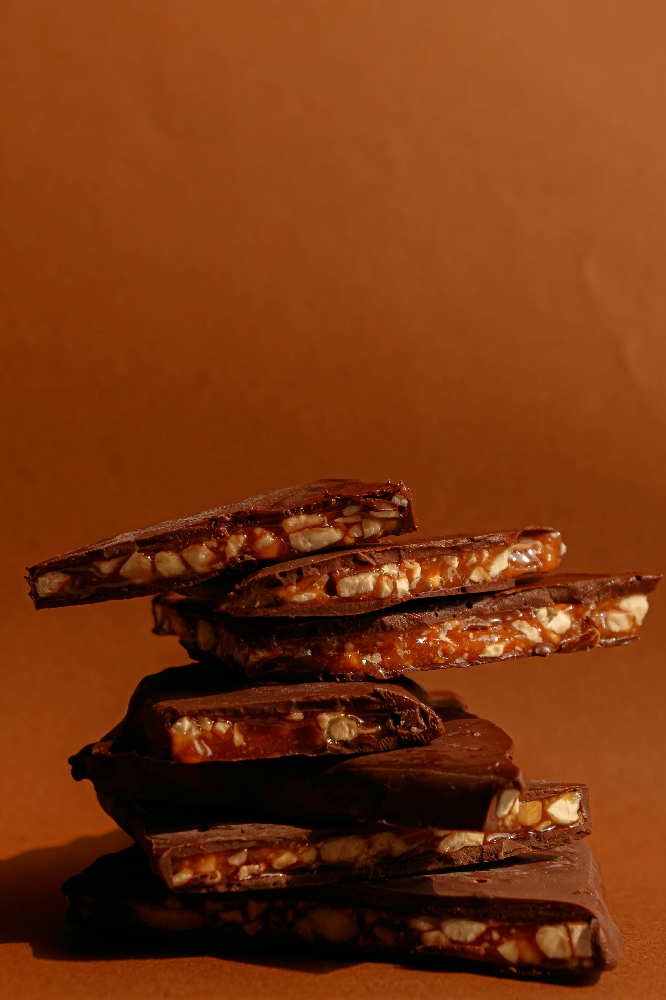

Wrong Recipe? Click here to go back home
Grandma's Toffee

Despite it's name, this recipe is not from my grandmother, nor did she discover it.
Ingredients
- 1/2 cup pecans, chopped
- 1/2 cup butter
- 1/2 cup brown sugar, firmly packed
- 6 Hershey bars
Steps
- Place chopped nuts in bottom of well-buttered 9x5in pan
- Melt butter in saucepan; add brown sugar and cook over medium heat, stirring constantly until it reachs 290 degrees on a candy thermometer
- While hot, pour toffee over the nuts and cover with hershey bars, spreading once melted.
- Let cool, then refrigerate to allow the chocolate to set
- Break into pieces and serve, wrapping extra in storing in refrigerator